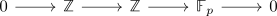
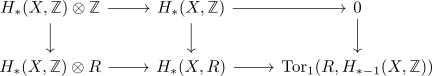
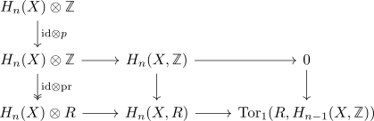
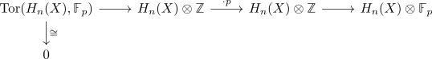

vanishing redueced F_p homology and reduced homology is an R-module
Proposition
Let $X$ be an anima and $R \coloneqq \mathbb{Z}[p_i^{-1}] \subseteq \mathbb{Q}$ a localization for primes $p_i$.
TFAE:
- $\tilde{H}_*(X,\mathbb{Z})$ is an \(R\)-module.
- $\tilde{H}_*(X, \mathbb{F}_{p_i}) = 0$ for $p_i$.
Proof
1) $\implies$ 2)
todo:
- show that $\tilde{H}_*(X, \mathbb{Z}) \otimes \mathbb{F}_p = 0$
- show that the tor terms vanish: argue again by the long exact sequence of a derived functor
2) $\implies$ 1)
We want to show that $\tilde{H}_*(X, \mathbb{Z})$ is uniquely disible, i.e. tensoring with $\cdot p: \mathbb{Z} \rightarrow \mathbb{Z}$ induces an isomorphism. In particular it forms a short exact sequence

So using the naturality of the universal coefficient theorem for singular homology gives a short exact sequence

which fits into

here the dashed arrow is surjective since tensor functor as right exact functor.
so it suffices to show that it is injective: Here we may use that $H_{n+1}(X, R)$ is zero, so in particular also $\mathrm{Tor}(H_n(X), \mathbb{F}_p)$. thus the long exact sequence of a derived functor results

which shows that $\cdot p: H_n(X) \rightarrow H_n(X)$ must be injective, therefore uniquely divisible.